SAGANO BLOG
- >
- SAGANO BLOG
- >
- 学校行事
2024年06月14日
こちらの記事の続編です。京都府立嵯峨野高等学校 6月10日 Sagano Global Forum for Student Research (SGF) PartⅠ - SAGANO BLOG (kyoto-be.ne.jp)
午後からは学年ごとに、それぞれのステップに応じた活動を行いました。１年生は探究活動の原点であり,核となる問いについて深める「問いづくりワークショップ」に励みました。


「質問と問いの違いとは？」「質問はどんなふうに分類できる？」「それぞれの長所と短所は？」「探究に向いている問いとは？」グループに分かれ様々な視点から問いについて深め、嵯峨野高校の探究活動のメインとなるラボ活動に向けて第一歩を踏み出しました。


2024年06月11日
6月10日 AM「課題研究発表会」
本校では毎年校内での課題研究発表会を行ってきました。今年度は初めて、全校生徒が終日参加し、講演会やワークショップなども組み合わせた、いわば「探究Day」という形でリニューアル開催しました。
午前中は、３年生の課題研究発表会です。体育館での開会式の後、３年生１～６組の生徒はアカデミックラボの研究成果を英語で、３年生７・８組の生徒は、スーパーサイエンスラボⅠ～Ⅲの研究成果をそれぞれプレゼンテーションしました。
アカデミックラボ58件、スーパーサイエンスラボ35件、サイエンス部1件、さらに海外からJunipero Sera High School 2件、Notre Dame Highschool Belmont校1件、合計97件の研究発表が行われる一大イベントとなりました。


当日までに、オンライン上に全ての発表のスライド pdf資料 を閲覧できるようにしました。生徒達は予めこれらを閲覧し、コメントや質疑応答を行いました。英語のスライドは、質問コメントも英語です！
いよいよ当日の発表会。各グループが２～３回ずつ発表を行うため、発表延べ数は268本！ したがって部屋数もHR教室や特別教室併せて35会場と、文字通り全校あげてのイベントとなりました。聴講者は本校全生徒の他、TAとして留学生、教育関係者が来場されました。
アカデミックラボの発表は、質疑応答も全て英語です！質問する側も回答する側も、頭をフル回転させながら真摯に伝えようとする姿が印象的でした。


スーパーサイエンスラボの発表および質疑応答は日本語で行われることもあり、質問する側も回答する側も、科学的・論理的に深いレベルで議論する様子も観られました。各発表の司会は２年生が中心となって取り組みましたが、有志の３年生の他、１年生もチャレンジしてくれました


終了後「これで終わりかと思うと、感慨深いものがあるな･･･」とつぶやいている生徒がいました。今回の経験を自信に変えて、さらに大きな課題解決と夢の実現に向かってくれることと思います。
2024年04月30日
入学式を終えて早１ヶ月。１年生も少しずつ学校生活に慣れてきました。
入学後２週間はステップアッププログラムとして、分掌オリエンテーションや教科ガイダンス、校内ツアーを実施しました。


また、ステップアッププログラム３日目には佛教大学副学長の原清治先生から、「新入生に向けたメッセージ」とのタイトルで御講演くださいました。
偶然にも講演前に原先生に話しかけた２人の生徒達。２人のやりとりを再現しながら、「探究活動を行ったり、これから先を生きていく中で、相手へのリスペクトを忘れないでほしい」というメッセージを受け取りました。


そして、ステップアッププログラムのラストは学年レクリエーション！
レクリエーション１つ目のペーパータワーコンテストでは、A4用紙20枚とはさみのみでどこまで高いタワーを立てられるか、各チームの工夫が光りました。これぞまさに、探究活動！


レクリエーション２つ目の大縄跳び。体力勝負かと思いきや、ここでも各クラス20人ずつのチーム分けや跳ぶメンバーの並び順など、工夫をするのが嵯峨野生。


盛り上がった結果は、以下の通りになりました。
ペーパータワーコンテスト １位 ２組５班 ２位 ７組１班 ３位 ６組３班
大縄跳び １位 ７組(82回) ２位 ６組(54回) ３位 ８組(46回)
嵯峨野高校での旅路は、まだまだ始まったばかり。少しずつ歩み始めたみんなの１歩を教員一同、あたたかく見守っています。
2024年04月22日
4月19日(金) 3年生神戸野外活動を行いました。
JR三ノ宮駅に集合後、神戸市内で班別活動を行いました。

今回の野外活動では、事前にお題として提示していた９地点を生徒たちが探し出し、その場所で写真を撮るという取組に挑戦しました。
場所探しとともに、神戸の街並みを見て歴史や文化に思いをはせました。
 |
 |
お題を全てクリアした班もありました。
天候にも恵まれ、どの班も楽しく過ごしていました。

2024年04月19日


初めのうちは火を起こすことに苦労していた生徒達でしたが、どの班も力を合わせて完成にこぎつけました。青空の下て自分達が調理したものを味わうのは、さぞ美味しかったことでしょう。普段の昼食時よりも一段と明るい表情で食べる姿がとても印象的でした。
食事の後は用具をきれいに洗って後片付けを行い、各クラスで記念写真を撮影し現地を後にしました。
2024年04月19日


広場に整列し、キャンプ場の方から諸注意をしていただきました。普段とは違い、ゴミの分別も５種類に分類することなど、細かな説明をしていただき、生徒達もしっかり注目していました。その後は火起こしからスタートです。
2024年04月19日


キャンプ場の1.5km手前でバスを降車し、現地までは徒歩です。天気にも恵まれて飯ごう炊さんにはいい準備運動といったところでしょうか。右の画像がキャンプ場に到着したところです。


2024年04月11日


本日のロングホームルームでは、昨日の班長会議の内容を班員で共有した後、野外活動で調理するメニューや必要な用具・食材などを話し合いました。皆が積極的に意見を出し合い、楽しい雰囲気で準備を進めている様子が伝わってきました。明日までにメニューと必要なレンタル用品の見積書を提出することになっています。班員全員で協力して決めていって欲しいと思います。
2024年04月10日


4月19日(金)に実施する野外活動に向けて、昨日までに各クラス５つの班を編成し、班長を選出しました。写真は本日昼休みに行われた班長会議の様子です。担当の先生から内容に関する詳細な説明があり、班長はその内容を明日のLHR等で班員に伝達する役割を担っています。全員が真剣に説明を聴き、必要なメモをとっていました。今後メニューや必要な用具の選定などを班ごとに協議し準備を進めていきます。
2024年04月09日
2024年4月8日、今日はそれぞれのはじまりの日でした。

【始業式】


はじめて嵯峨野高校に来られた先生方...生徒のみなさんの心に、どんな好奇心の波紋を広げてくださるのか、とても楽しみです。
生徒部長の原田先生からは...新たな規定についてご説明と「実りある学校生活について」改めて考えるきっかけとなるお話をいただきました。
そして吉村校長先生...

生徒のみなさんの目を見ながら、じっくり語りかけるように以下2点についてお話しされました。
「できたこと」もしっかり評価して、充実した1年に
3学期修了式でPDCAサイクル(Plan/Do/Check/Action)という方法についてお話ししたが、みなさんには、反省ばかりでなく「できたこと」をしっかり評価してほしい。PDCAサイクルだけでなく、人それぞれに自分に合う方法を見つけることも大切。行動を先行するDCAPサイクル、ほかにもOODAループ(Observe/Orient/Decide/Act)やSTPDサイクル(See/Think/Plan/do)など充実した1年を過ごすために計画を立てる方法は様々にあります。一度に無理な計画を立てず、1年という長期目標を元に、1週間くらいの短いサイクルで何度もこれらを回し、さらに改善を図ることを心掛けてください。
長続きする「幸福」とは？
2021年「ウェルビーイング」学会が設立され、近年話題になっています。代表理事で慶應義塾大学大学院の前野隆司教授によると「ウェルビーイング」とはWell＝良い、Being=状態。つまり「心と体と社会が良い状態」のこと。しかし、何を「良い状態」と感じるか個人差は大きい。そこで前野教授は「長続きしない幸福の条件」を明らかにし、さらに「長続きする幸福の因子」を整理されました。ぜひ、この幸福の因子を意識しながら、自分を見つめ直してみましょう。ここにいる全員がウェルビーイングを実感できる1年となることを願っています。
・長続きしない幸福の条件
社会的地位・お金・モノなど、他人と比較することで得られる幸せは長続きしない
・長続きする幸福の因子＊人が幸せを感じる４つの因子
「やってみよう」因子（自己実現と成長）
「ありがとう」因子（つながりと感謝）
「なんとかなる」因子（前向きと楽観）
「ありのままに」因子（独立と自分らしさ）
...そして午後からは、見事な彩を添えてくれた桜に囲まれて、
京都府立嵯峨野高等学校第76回入学式が挙行されました！

【校長式辞】
「和敬（和をもって敬うこと）」「自彊（自ら務めて励むこと）」「飛翔（新しい世界に飛び立つこと）」本校の教育活動はすべてこの校是のもとに行われています。みなさんもこの3つの校是を心に刻み、日々その実践を心掛けてください。また自分が進むべき方向を正しく見極めるためには、世の中全体を幅広く見渡し、様々な意見や考え方に触れ、物事を色々な角度から捉える力が重要になってきます。それが「俯瞰」する力です。
本校で力を入れている探究(ラボ)活動でも、この力が必要です。実験方法やデータにばかり目を奪われ「俯瞰」する視点を忘れた探究は、目的そのものを見失ってしまうことにもなりかねません。
また、この「俯瞰」する力は人との関係をうまく築くうえでも欠かせません。相手のことを狭い視野で一面的に見ていたのでは、相手の良さに気付くことができなかったり、相手のことを客観的に理解できなかったりするでしょう。
さらに、自分自身を「俯瞰」する力も大切です。自分自身を少し離れたところから見ると、自分の足りない部分や考えの間違い、もしくは自分の良さや魅力が見つかることもあります。そして何かに悩んで出口が見えなくなった時でも、自分を「俯瞰」することで冷静さを取り戻し、光が見えてくることがあります。
こうした力は「メタ認知能力」などとも呼ばれ、様々な分野で重要視されています。みなさんの周りにはまだまだ知らない世界が広がっています。「俯瞰」する力をぜひ心掛けてください。三年後、みなさんが今は想像もつかないような、大きく成長した自分と出会えることを心から願っています。

この言葉を受けて生徒の宣誓と決意表明が続きました。


新しい制服のせいでしょうか...すでに中学生とは異なる顔つきになっています。
そして新入生担任の先生方の登壇...

校長先生は式辞のなかで保護者等のみなさまに向けて「新しい家族を迎えたという気持ちで教育に力を注ぐ」と宣言されました。もちろん教職員一同、おなじ気持ちです。...そして新入生が「新しい家族」ならば...「お兄ちゃん」「お姉ちゃん」も、なぜかすでに同じ気持ちのようです。先週、ワンダーフォーゲル部をはじめ、先輩たちが1年生が使う下駄箱等の大掃除をしていました。...しかも、なんだか嬉しそう。


そして新入生のみなさんがはじめて歌う校歌は、吹奏楽部の先輩方が生演奏で支えてくれました！

つまり...
「新入生のみなさん、みんなで待ってましたよ！ようこそ、嵯峨野高校へ！！」ということです。
さぁ、私たちの高校生活のはじまりです！！
2024年03月26日
３月13日（水）の５・６時間目に「情報Ⅰ 合同発表会」を行いました。
３学期の情報Ⅰの授業では、「SDGs」をテーマにグループで探究学習に取り組み、プレゼンテーションを行いました。そして、各クラスで最も評価の高かったグループがクラス代表に選ばれ、合同発表会でプレゼンテーションを行いました。学年全員の前で発表するという機会はなかなかないので、よい経験になったのではないでしょうか。
どのクラスもさすが代表と感じるような素晴らしい発表でしたが、その中で教員の審査と生徒の皆さんの投票の結果、見事８組が最優秀賞、４組と１組が優秀賞に輝きました。おめでとうございます！
クラス内の発表でも素晴らしい発表がたくさん見られました。その様子は後日お伝えしたいと思います。
以下、合同発表会の各クラスの発表タイトルと写真を掲載します。
１組「教育現場における教員のイメージの改善」＜優秀賞＞
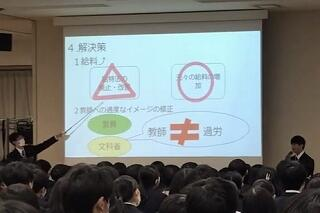 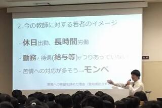
２組「既存のマイクロプラスチックの回収方法の検討」
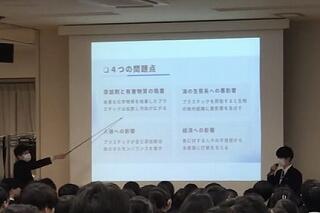
３組「京都府で観光客が多くても住民が交通不便を感じない街づくりをできるのか」
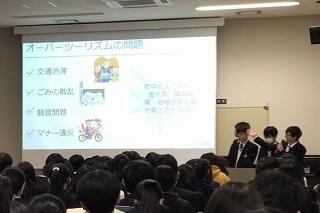
４組「教育虐待」＜優秀賞＞
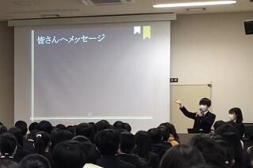 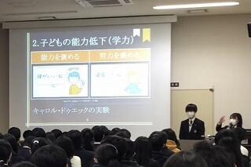
５組「教育～不登校への対応～」
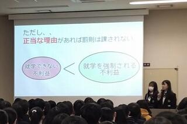
６組「牛とメタンガスと地球温暖化の相関関係」

７組「3Rの活性化」
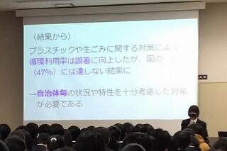
８組「消費者が魚を守る！？～水産エコラベルの普及と消費者の意識～」＜最優秀賞＞
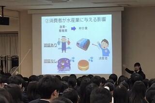 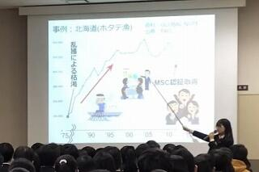
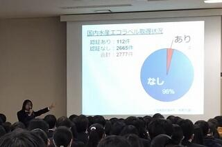 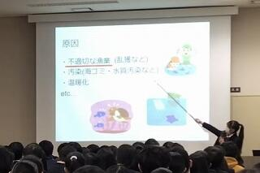
2024年03月19日


本日、体育館にて修了式が行われました。
約1年ぶりに全校生徒が体育館に集まり、校歌斉唱から始まりました。
校長先生の式辞では
ＰＤＣＡサイクルへの言及から始まりました。PDCAサイクルとはPlan（計画）、Do（実行）、Check（測定・評価）、Action（対策・改善）の仮説・検証型プロセスを循環させ、マネジメントの品質を高めようという概念です。このサイクルで重要なのは、CheckとActionの部分である。春休みのうちに、この1年、自分ができたことはなにかをしっかり意識して振り返り、4月からの新しい計画に繋げて欲しい。
さらに、阪神タイガースの矢野前監督の言葉を紹介しながら、自分が成功できると信じ切ることの大切さなどに触れ、４月から新しい目標に向けて頑張ってほしいとの言葉がありました。
生徒指導部長からは
制服の「正装」変更について経緯を添え説明がありました。そして、教育目標（安全安心・全員が主人公・感謝）について振り返りがありました。在校生の自己肯定感や自己有用感を高めたいという想いから設定に至ったという経緯のお話がありました。
進路指導部長からは
この春受験を頑張った3年生に想いを馳せ、彼らの受験勉強の体験を記した「合格体験記」を紹介しました。そのうち、夢をあきらめず、苦手を克服して志望校に合格した一人について焦点を当て、来年度学年が上がる在校生へ、自分が何をしたいか。どんな世界になって欲しいかを考えること。挑戦者になること。周りの人の力を借りること。それらを踏まえ頑張って欲しいとのお話がありました。
その後、伝達表彰式を行いました。
2024年03月05日
 令和6年3月1日金曜日
令和6年3月1日金曜日
眩い光のなか、多くの人に祝福されて3年生が巣立っていきました。
これまでの努力を自信に変えて、羽ばたく姿の何と頼もしいことか。

ずっと前を歩いているので見えなかったけれど、
晴れやかな嬉しさと、別れの辛さを噛みしめて、
最後の引率をする、担任の先生の表情は複雑です。


後ろをついて歩くだけではわからない、
大人のこんな顔も最後に覚えておいてね。
愛されるとはそういうものです。


さあ飛翔のとき。嵯峨野生よ、挑戦者であれ。

2024年02月09日


令和６年２月８日(木)の午後、令和５年度アカデミックラボ課題研究発表会を開催しました。２年生１～６組の生徒が、１年間かけて探究した58のテーマについて、それぞれ発表しました。
視聴生徒として１・２年生全生徒が参加したほか、それぞれの探究活動でお世話になった方やSSH関係校の視察・メディアの取材などで来校いただいた方にもご参加いただき、活気あふれるポスターセッションが行われました。
発表は一つの区切りではありますが、この後も次年度の英語でのスライドプレゼンテーションに向けて探究活動を続けていきます。
2024年02月06日
2月2日（金）に第2学年で嵯峨野マッチを実施しました。
5種目の競技（ドッジボール、フットサル、ソフトバレー、ボードゲーム、百人一首）をクラス対抗で争い、どの競技も生徒達は楽しみながら真剣に活動していました。
結果は以下の通りです。
総合優勝：6組 準優勝：5組 第3位：2組、4組
嵯峨野マッチ運営委員が事前の準備から当日の運営まで担当し、みんなで協力して作り上げてくれました。配信による委員長の結果発表時には歓声が沸き起こり、盛況のうちに無事終えることができました。


2024年02月05日


各班思い思いの場所を巡って無事ゴールの京都駅に到着しました。普段当たり前のように生活している場所ですが、このような体験を通して新たな視点で「観光都市としての京都」を観察する機会となったようです。また、普段余り接点がない班の人と色々話す機会がもててとてもよい交流ができたという感想を寄せてくれた生徒が多数見られました。１年生にとっては充実感あふれる、思い出に残る行事の一つとなったようでした。
2024年02月02日


１年生は３時間目からフィールドワークを実施します。事前に各グループで立てた計画書に従って名所史跡などを探索し、指定された時間内にゴールの京都駅を目指します。写真は昇降口付近での出発風景です。行ってらっしゃい！
2024年01月25日

{kind=link}
{kind=link}
{kind=link}
{kind=link}
{kind=link}
{kind=link}
{kind=link}
{kind=link}
{kind=link}
{kind=link}
{kind=link}
{kind=link}
{kind=link}
{kind=link}
{kind=link}
１月１６日（火）に金剛能楽堂で、本校２年生を対象に古典芸能鑑賞を行いました。
まず、狂言『附子（ぶす）』です。
主人は、桶に「附子」という猛毒が入っているので、近づかないようにと言って出かけます。
「附子」の方から吹く風にあたっても、命が危うくなると言います。
太郎冠者と次郎冠者は、それが美味しい砂糖と知って......。
茂山千五郎先生（太郎冠者）と茂山逸平先生（次郎冠者）によって、「附子」を危険物としておびえる様子や、その後に美味しそうに食べる様子が演じられ、生徒達は楽しそうに笑って鑑賞していました。
次に、能『葵上』を鑑賞しました。
シテは金剛龍謹先生でした。
こちらは『源氏物語』が題材になっています。
六条御息所の生き霊が、葵上を苦しめようとする場面は、迫力満点でした。
時代を経ても、嫉妬や恨む気持ちがあるということを感じさせられました。
事前学習では、「躍動する時代ー中・近世ーの文芸」ラボと狂言部が、この日を楽しめるようにと解説動画を作成してくれました。
その事前学習があったので、より楽しんで観ることができました。
一流の先生方による能と狂言を鑑賞し、京都の伝統文化に親しむことができました。
2024年01月09日
本日、３学期の始業式を各HR教室への配信で行いました。
校長先生の式辞では、まず年始に起こった能登半島地震や航空機同士の接触事故について触れられ、被災された方々を悼まれました。そして、皆さんには、こうした事例を我が身にも起こり得ることとして捉えるとともに、日頃から防災に対する意識を高め、いざという時に命を守る行動ができるよう促されました。
次に「有終の美」という言葉（物事をやり遂げて立派な成果を上げること）を挙げられ、１，２年生は次の学年のスタートに向けて、3年生は悔いの無い高校生活となるよう、学年最後の3学期を全うして欲しいと述べられました。
その後、進路指導部長からは、共通テストを控える3年生に向けて今までの経験を糧に実力をしっかりと発揮して欲しいと鼓舞されるお話がありました。
最後に伝達表彰式がありました。
午後からは、１、2年生は課題テスト、3年生は授業を行いました。

〒616-8226
京都市右京区常盤段ノ上町15番地
TEL 075-871-0723 FAX 075-871-0724
E-mail [email protected]
Copyright (C) 京都府立嵯峨野高等学校 All Rights Reserved.